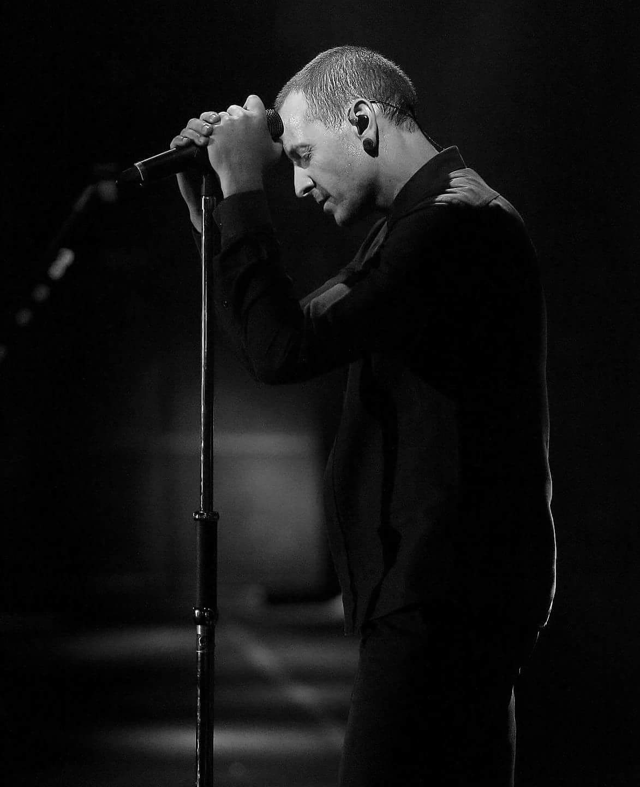

Tribute to Chester Bennington
One More Light
Who cares if one more light goes out?
In a sky of a million stars?

Well I do..
Chester Charles Bennington
Chester Charles Bennington (March 20, 1976 – July 20, 2017) was an American singer, songwriter, musician, and actor.
He was best known as the lead vocalist for Linkin Park.
He was also lead vocalist for the bands Dead by Sunrise,
Grey Daze, and Stone Temple Pilots. He also appeared in cameo roles in several films, including Crank,
Crank: High Voltage and Saw 3D. Bennington is widely regarded as one of the top rock musicians of the 2000s.
Bennington first gained prominence as a vocalist following the release of Linkin Park's debut album Hybrid Theory (2000)
which was a worldwide commercial success. The album was certified Diamond by the RIAA in 2005, making it the best-selling
debut album of the decade, as well as one of the few albums ever to hit that many sales. Linkin Park's following studio
albums, from Meteora (2003) to One More Light (2017), continued the band's success. Bennington formed his own band,
Dead by Sunrise, as a side project in 2005. The band's debut album, Out of Ashes, was released on October 13, 2009.
He became the lead singer of Stone Temple Pilots in 2013 to release the extended play record High Rise on October 8, 2013,
via their own record label, Play Pen, but left in 2015 to focus solely on Linkin Park.
Hit Parader magazine placed Bennington number 46 on their list of the "100 Metal Vocalists of All Time".Writing for Billboard,
Dan Weiss stated that Bennington "turned nu-metal universal".
Linkin Park has sold over 100 million records worldwide making them the best-selling band of the 21st century and
one of the world's best-selling music artists.
Death
Chester Charles Bennington was born on March 20, 1976, in Phoenix, Arizona. His mother was a nurse,
while his father was a police detective who worked on child sexual abuse cases.
Bennington took an interest in music at a young age, citing the bands Depeche Mode and Stone Temple Pilots
as his earliest inspirations,and dreamed of becoming a member of Stone Temple Pilots, which he later achieved
when he became their lead singer.
Bennington suffered sexual abuse from an older male friend when he was seven years old.
He was afraid to ask for help because he did not want people to think he was gay or lying,
and the abuse continued until he was 13 years old. Years later, he revealed the abuser's identity to his father,
but chose not to pursue him after he realized the abuser was a victim himself.
Bennington's parents divorced when he was 11 years old. The abuse and his situation at home affected him so much
that he felt the urge to kill people and run away.To comfort himself, he drew pictures and wrote poetry and songs.After the divorce,
Bennington's father gained custody of him. Bennington started abusing alcohol, marijuana, opium, cocaine, meth, and LSD.He was
physically bullied in high school. In an interview, he said that he was "knocked around like a rag doll at school,
for being skinny and looking different".
At the age of 17, Bennington moved in with his mother. He was banned from leaving the house for a time when his mother
discovered his drug activity. He worked at a Burger King before starting his career as a professional musician.
Bennington was found dead at his home in Palos Verdes Estates, California; his housekeeper discovered his body around 9:00 a.m. PDT on
July 20, 2017. His death was ruled a suicide by hanging. Mike Shinoda confirmed his death on Twitter, writing, "Shocked and heartbroken,
but it's true. An official statement will come out as soon as we have one".On July 21, Brian Elias, the chief of operations for the office
of the medical examiner-coroner, confirmed that a half-empty bottle of alcohol was found at the scene, but no other drugs were
present. On December 5, 2017, Billboard magazine wrote that Bennington's toxicology report showed "a trace amount" of alcohol in the singer's system at the time of death.
Connections to Chris Cornell's death
Bennington's death occurred on what would have been Chris Cornell's 53rd birthday.Cornell was a close friend of Bennington. Cornell's
death was also ruled as suicide, by hanging, two months prior.
Bennington commented on Cornell's death on Instagram by stating, "I can't imagine a world without you in it."
Shinoda noted that Bennington was very emotional when the band performed "One More Light" in his honor on Jimmy Kimmel Live!, where he
could not finish singing the song and started getting choked up during both the rehearsal and at the live performance setting.
The band was due to record a live performance of their single "Heavy" on the show, but decided instead to play "One More Light" after
hearing the news about Cornell's death because the song is about the loss of a friend. Bennington sang Leonard Cohen's song "Hallelujah" at Cornell's funeral. He was also the godfather of Cornell's son Christopher.
Bennington's funeral was held at South Coast Botanic Garden in Palos Verdes, California, on July 29. In addition to his family members and
close friends, many musicians who toured or played with Linkin Park were also in attendance. The service also included a full stage for
musical tributes.Bennington was cremated.
Chester Bennington Talks About His Depression Before His Death In Last Interview
When life leaves us blind
Love keeps us kind
-Linkin Park
You will be Missed
R.I.P.Chester Bennington
<